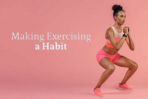

Group Video
This is a video my group created. The video is aimed to show how dependent people are on their phones. This dependence has caused peoples communication skills to suffer.
built by Kate Marshall
This is a video my group created. The video is aimed to show how dependent people are on their phones. This dependence has caused peoples communication skills to suffer.
This blog post is about teenagers obsession with their phones.I write about how their reliance on phones can create communication issues and misunderstandings.
This blog post is about the benefits of working out, both mentally and physically.I aim to motivate and encourage people to start excerising.
This blog posts shows the different stereotypes and stigmas around getting tattoos. I aim to to encourage teens who want to get tattoos to look past the stigmas and focus on what their tattoo means to them.
In this podcast, my group and I dicuss society's obsession, dependance, and emotions regarding social media. .